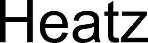

Trade Mark Journal No.2026/012 20 March 2026
WO0000001892467 (11,20,24,25,35)
Office of origin: Benelux Office for Intellectual Property (BOIP)
Date of International Registration:4 August 2025
Date of designation in the UK:
4 August 2025

International priority date claimed: 4 February 2025
(Benelux Office for Intellectual Property (BOIP))
(1518866)
- Class 11
- Heating apparatus; bottle heaters; electric hot-water bottles; bottle warmers; electric heated bottles; electrically heated clothing; electrically heated blankets, other than for medical purposes; heating blankets, other than for medical purposes; heating cushions not for medical purposes [electric or chemically activated]; foot warmers; footwarmers, electric or non-electric.
- Class 20
- Cushions; chair cushions; seat cushions; pillows; neck pillows.
- Class 24
- Coverings of textile and of plastic for furniture (unfitted); coverings (furniture -) of textile; chair covers; chair backs [textile articles]; bed clothes; bed clothes and blankets; bed blankets; cotton blankets; blankets for outdoor use; sofa blankets; lap blankets; lap rugs; lap-robes; travellers' rugs; covers for cushions; covers for duvets; covers for pillows; pillow cases; towels.
- Class 25
- Clothing; articles of clothing; casual wear; underwear and nightwear; sleepwear; pajamas; pyjamas; peignoirs; robes; hooded bathrobes; hooded tops; hoodies; hooded pullovers; hooded sweatshirts; thermally insulated clothing; thermal underwear; thermal socks; arm warmers [clothing]; leg warmers; leggings [leg warmers]; legwarmers; handwarmers [clothing]; mufflers [clothing]; mufflers [neck scarves]; scarves; neck warmers; head scarves; ear warmers being clothes; gloves; jackets; overcoats; overalls; over-trousers; overtrousers; overshirts; ponchos; capes (clothing); jumpers [sweaters]; sweaters; pullovers; cardigans; shirts; short sets [clothing]; t-shirts; bottoms [clothing]; trousers; sweat bottoms; sweat shorts; sweat shirts; ski wear.
- Class 35
- Retail services and online retail services, all connected with the sale of heating apparatus, apparatus for heating and steaming items and fabrics, not for industrial purposes, electrically heated clothing, electrically heated blankets, other than for medical purposes, heating blankets, other than for medical purposes, heating cushions not for medical purposes [electric or chemically activated], foot warmers, footwarmers, electric or non-electric; retail services and online retail services, all connected with the sale of cushions, chair cushions, seat cushions, pillows, neck pillows; retail services and online retail services, all connected with the sale of textile coverings, coverings of textile and of plastic for furniture (unfitted), coverings (furniture -) of textile, chair covers, chair backs [textile articles], bed clothes, bed clothes and blankets, blankets, bed blankets, cotton blankets, blankets for outdoor use, sofa blankets, lap blankets, lap rugs, lap-robes, travellers' rugs, covers, covers for cushions, covers for duvets, covers for pillows, pillow cases, towels; retail services and online retail services, all connected with the sale of clothing, articles of clothing, casual wear, underwear and nightwear, sleepwear, pajamas, pyjamas, peignoirs, robes, hooded bathrobes, hooded tops, hoodies, hooded pullovers, hooded sweatshirts, thermally insulated clothing, thermal underwear, thermal socks, arm warmers [clothing], leg warmers, leggings [leg warmers], legwarmers, handwarmers [clothing]; retail services and online retail services, all connected with the sale of mufflers [clothing], mufflers [neck scarves], scarves, neck warmers, head scarves, ear warmers being clothes, gloves, jackets, overcoats, overalls, over-trousers, overtrousers, overshirts, ponchos, capes (clothing), jumpers [sweaters], sweaters, pullovers, cardigans, shirts, short sets [clothing], t-shirts, bottoms [clothing], trousers, sweat bottoms, sweat shorts, sweat shirts, ski wear; information, advisory and consultancy services in relation to all of the aforesaid.
JUMAXAN
Representative: Brantsandpatents BV, Pauline van Pottelsberghelaan 24, B-9051 Ghent, BELGIUM